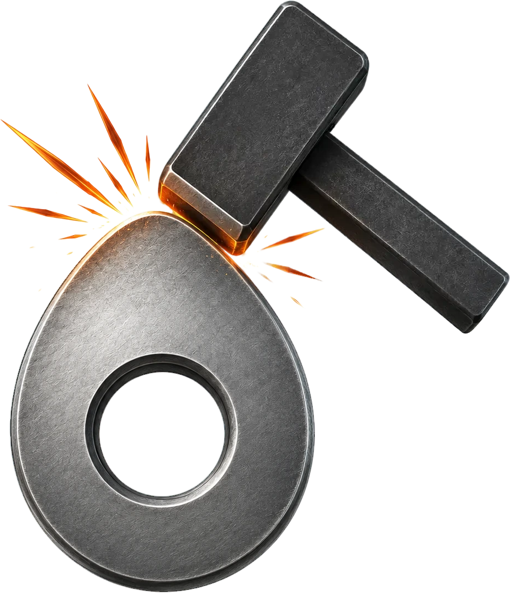

CamForge Cam and Follower Design Software
CamForge is engineering software for designing cam profiles and evaluating follower motion. It supports mechanical engineering education, preliminary mechanism design, and structured comparison of motion laws.
Online preview
The browser-based version provides the core workflow for defining motion segments, calculating cam geometry, analyzing follower motion, and correcting discontinuities.
Download
A desktop version of CamForge is currently under development. It will provide a substantially broader set of resources for engineering analysis, project organization, and professional workflows. A public download is not yet available.
About CamForge
CamForge provides an integrated environment for the preliminary design and analysis of cam and follower mechanisms.
- Complete motion cycles Builds 360° cam cycles from rise, return, and dwell segments.
- Motion-law selection Supports manual selection and automatic search for compatible motion-law sequences.
- Cam profile calculation Calculates cam geometry for flat-faced and roller followers.
- SVAJ analysis Evaluates displacement, velocity, acceleration, and jerk throughout the motion cycle.
- Engineering verification Examines follower motion, pressure angle, and profile curvature.
- Discontinuity diagnosis Identifies displacement, velocity, and acceleration jumps at segment junctions.
- Discontinuity correction Searches for continuous solutions by adjusting segment angle, displacement variation, and, when permitted, the motion law.
- Solution comparison Compares the original design with a corrected preview before changes are applied.